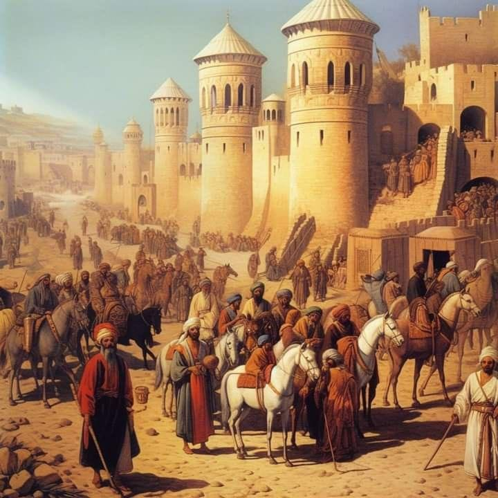

Sewaktu duduk di bangku SMA saya pernah mengikuti...
Kenalkan Ayat Toleransi bagi Anak Didik Kita
4 mei 2023 20.58
Di yogya ada sebuah keluarga kecil yang menyekolahkan anaknya masing-masing di PAUD dan sebuah sekolah dasar negeri. Sang sulung di kelas empat SD negeri itu. Keluarga ini berasal dari keluarga besar islam moderat dari Jawa Timur.
Pada suatu hari, sang sulung berkata bahwa gurunya selalu mengatakan yang buruk soal orang-orang non islam. Malah dia melarang semua siswa di kelas itu bergaul dengan anak/orang non muslim, apapun alasannya. Dia juga menyarankan untuk menjauhi gereja/vihara/pura tempat non muslim. Dia kerap berkata bahwa non muslim itu kafir.
Kebencian kepada non muslim seakan nyata terpancar dari sang guru itu dan beberapa murid yang berasal dari keluarga konservatif. Mereka acuh dan enggan bergaul dengan teman non muslim. Bahkan sering terlontar perasaan anti dan penuh rasa benci seakan mereka harus di perangi.
Sang sulung seakan melawan perkataan guru itu. Di keluarga ayahnya ada beberpa kerabat non muslim. Namun mereka tidak saling bermusuhan dan mengatakan hal jelek satu sama lain. Karena itu sang sulun menyanggah perkataan sang guru soal non msulim yang selalu terindikasi buruk dan merupakan musuh umat islam.Dia juga mempersonalkan perkataan kafir kepada non muslim karena perkataan itu tentu amat menyakitkan bagi mereka
Kebencian kepada non muslim memang sering dikenalkan oleh Lembaga pendidikan seperti sekolah dasar, menengah sampai perguruan tinggi. Bahkan guru-guru yang kebetulan berpendapat konservatif terhadap agama, mentransfer faham-faham tertentu ke anak didik juga akhirnya terpapar faham itu.
Hal itu juga terjadi pada ekstrakulikulerseperti Rohani Islam (ROHIS) baik di sekolah dasar, menengah maupun perguruan tinggi ada eskul ini. Umumnya para murid di SD banyak yang belum paham beberapa ayat di Al-Quran yang mengandung ayat toleransi, dimana bahwa non muslim yang tidak memerangi mereka adalah saudara dalam kemanusian
Beberapa ayat lain yang mengandung semangat toleransi adalah Os.Al-Baqarah:256. Bahwa "Tidak ada paksaan dalam menganut agama islam, sesungguhnya telah jelas perbedaan antara jalan yang benar dengan jalan yang sesat". Untuk memperkuat pemahaman anak di angku sekolah dalam urusan agama yang tidak boleh memaksa dan agar mereka menghargai perbedaan agama.
3 Manfaat Anak-Anak Diberi Kesempatan Tampil Kultum Ramdhan
27 maret 2023 00.13
Waktu masih SMA, pada malam Ramadan, mereka yang aktif di Rohani Islam (Rohis) dapat jatah mengisi kuliah tujuh menit (kultum) jelang tarawih. Sejak isya yang bertugas sudah datang.
Pakaian sudah tentu rapi dan memakai kopiah. Baju koko yang paling tren waktu itu.
Saya juga kebagian. Pertama malahan. Maklum, ketua umum OSIS.
Dapat jatah duluan. Bicara di depan publik memang sudah saya mulai sejak kelas II SMA kini setara kelas XI. Beberapa temen saya juga sudah pegang jadwal. Yang biasa kasih kajian mungkin tidak begitu sulit
Namun, yang baru pertama kali ini yang gemetaran. Beberapa teman latihan keras sebelum tampil. Kebanyakan menghafal bahan dari buku-buku Islam tema Ramadan.
Pengurus masjid yang kebetulan dewan guru memang kasih kesempatan buat siswa untuk mengisi tausiyah singkat jelang tarawih. Hitung-hitung belajar jadi penceramah.
Jadi mubalig.'Setidaknya selama SMA ada pengalaman jadi ustadz.'
Mengawal, Kinerja Rohis Sebagai Dimensi Profil Pelajar Pancasila
1 juni 2023 10.09
Pada Tahun Pelajaran 2022/2023, sekolah mempunyai rencana program-program baru. Tentunya program yang lama yang baik dipertahankan dan dilanjutkan, serta merencanakan program baru yang lebih baik, mencoba untuk dikonsumsi dan dipelajari (al-Mukhafadhatu 'Ala Qodimis Sholeh wal 'Akdzu Bil Jadidil 'Aslah). .
Sebelum Rohis itu bekerja melaksanakan program-programnya, maka mereka perlu dikawal (rapat, kegiatan LDKS, dan dimantapkan dengan materi pendalaman seperti adanya outbond SKI/diklat Rohani Islam). Tentunya didalam organisasi ada perencanaan, pelaksaanaan dan evaluasi, sebelum lebih jauh mari kita pahami tentang Rohis.
Rohis adalah Rohani Islam (Rohis) sebagai sub organisasi dari Organisasi Siswa Intra Sekolah (OSIS), yang biasa disebut dengan Sie Kerohanian Islam (SKI). Rohis atau SKI ini, kegiatannya mendukung intra kurikuler keagamaan, dengan memberikan pendidikan, pembinaan dan pengembangan potensi peserta didik muslim agar menjadi insan yang beriman, bertaqwa kepada Allah Swt. serta berakhlak mulia dengan mengimplementasikan ajaran Islam dalam kehidupan sehari-hari. Dengan kata lain Rohis sebagai wadah untuk memperdalam ilmu agama islam, serta wadah untuk pengembangan minat dan bakat, khususnya di bidang Kesenian Islam.
Fungsi Kegiatan Rohis Pengembangan diri (taghyir an-nafs), yakni memotivasi peserta didik untuk mengembangkan potensi di bidang keagamaan yang dapat berkompetisi meningkatkan prestasi baik di lingkungan sekolah maupun masyarakat.
Pembinaan syakhshiyah Islamiyah (pribadi-pribadi yang Islami), yakni membina peserta didik muslim agar menjadi pribadi-pribadi unggul, baik dalam kapasitas keimanan, keilmuan dan pengamalannya.
Pembentukan jam'iyyah al-muslimin (komunitas muslim), yakni Rohis mempunyai fungsi sebagai wadah bagi peserta didik muslim untuk menjadi komunitas yang Islami dan menjadikan masjid/ musholla sebagai laboratorium kegiatan keagamaan di sekolah.
Siap Siaga Digital Melawan Radiakalisme
5 agustus 2023 03.58
Ketika ISIS mulai mundur dan akhirnya kalah melawan pemerintah resmi Suriah, secara global sebenarnya kasus serangan terror menurun. Menurut catatan Kepala BNPT Prof Dr Komjen Pol Rycko Amelza, penurunan serangan terror itu terjadi sejak tahun 2016- 2023.
Kita tahu bersama aparat keamanan memang memaksimalkan pencegahan untuk terorisme, sehingga tak heran jika menjelang Natal, maupun hari besar agama Budha di candi Borobudur maupun Idul Fitri, aparat kerap menangkap terduga teroris di berbagai kota di Indonesia.
Menurut Komjen Royko, meski terlihat menurun hakikatnya para kelompok-kelompok radikal ini terus melakukan gerakan dan mengubahnya dari hard approach ke soft approach dengan menggunakan agama sebagai alat pembujuk. Pola ini bisa kita lihat karena sudah di praktekan beberapa kelompok radikal dengan mengajarkan faham tertentu di beberapa ekstrakulikuler di sekolah menengah maupun perguruan tinggi.
Tentu kita sering mendengar hasil penelitian yang memperkuat premis ini. Lembaga-lembaga survey seperti setara atau para akademisi beberapa universitas sampai Lembaga seperti Wahid Institute menerbitkan kajian-kajian mereka soal radiakalisme.
Bahwa radikalisme tidak muncul dengan tiba-tiba, tapi cenderung muncul sejak belasan tahun sebelumnya kemudian di perkuat dengan berbagai ekstrakulikuler, seperti rohis dan beberapa lagi di tingkat universitas. Sebagaimana hasil penelitian BNPT menunjukan kelompok rentan, yakni remaja, anak-anak, dan perempuan, menjadi sasaran utama radiakalisme berjubah agama.
itulah kemudian yang menyebabkan seorang ayah dari empat anak bernama dita memutuskan untuk melakukan bom bunuh diri dengan sasaran tiga gereja di surabaya beberapa tahun lalu. Ironisnya, dita mengajak seluruh keluarganya untuk menjadi pelaku bom bunuh diri itu.
Hal yang sangat tidak menguntungkan bangsa ini adalah faham-faham radikal sepeti itu sering disampaikan melalui teknologi seperti media sosial dan beberapa situs. kegiatan offline memperkuat hal itu
Karena itulah, penting bagi seluruh masyarakat untuk membangun sikap siap siaga digital dalam bentuk : daya tangkal yang kuat, deteksi dini, dan resistensi terhadap konten radikalisasi di media sosial yang kerap mengatasnamakan agama.
Rohani Islam:Mengenal Lebih Dekat Kegiatan dan Maknanya
28 agustus 21.06
Dalam menjalani kehidupan, selain kebutuhan fisik, jiwa dan hati juga perlu diberi perhatian. Di dunia Islam, hubungandengan Allah dan pengembang nilai-nilai rohani sangatlah penting. Salah satu wadah yang mengembangkan hal ini adalah rohani islam.
Kesimpulan, Rohani Islam(Rohis) memiliki peran yang besar dalam membentuk karakter dan moral pelajar. Dari kegiatan agama, diskusi, hingga kesenjangan sosial, Rohis menjadi wadah yang membantu siswa memahami dan menerapkan ajaran islam dalam kehidupan sehari-hari.
Rohis adalah jembatan yang menghubungkan anatar kegiatan rohani dan nilai-nilai Islami dengan dunia pelajar. Semoga pemahaman tentang rohis ini memberi manfaat bagi semua kalangan, dari usia 7 hingga lanjut usia.
Rohis adalah singkatan dari "Rohani Islam". Ini adalah organisasi di sekolah atau institusi pendidikan yang berfokus pada pengembangan spiritualitas dan pemahaman agama Islam di kalangan pelajar. Tujuannya adalah untuk mengajarkan nilai-nilai agama, memperdalam pemahaman tentang Islam, serta memberikan ruang untuk beribadah dan berdiskusi tentang masalah-masalah rohani.
Kegiatan Rohis di sekolah sangat beragam dan bisa meliputi:
Kajian Kitab Suci: Kegiatan ini biasanya berupa diskusi atau pengajian mengenai isi Al-Quran atau Hadis. Ini membantu siswa untuk memahami ajaran-ajaran agama dengan lebih dalam.
Doa Bersama: Rohis sering mengadakan sesi doa bersama untuk memperkuat rasa spiritual dan menciptakan kebersamaan dalam berdoa.
Kegiatan Sosial: Termasuk dalam kegiatan ini adalah kegiatan amal dan sosial, seperti kunjungan ke panti asuhan atau penggalangan dana untuk membantu yang membutuhkan.
Forum Rohani Islam di Era Milenial:Teori Sosiologi Pengetahuan -Karl Mannheim
2 november 2022 10.00
Sewaktu duduk di bangku SMA saya pernah mengikuti acara forum rohis dari kabupaten Batul yang di selenggarakan di Ramah Makan dan Restoran Parangtritis. Dari acara tersebut saya mendapatkan pelajaran yang dapat diambil mengenai pengetahuan islami yang dapat diterapkan di kehidupan sehari-hari. Kajian yang dikemukan oleh pembicara mengenai "Gerakan Infaq Beras". Gerakan ini menghimpun dan menyalurkan beras dari para donatur
kepada orang yang berhak menerima(yatim piatu, dhufa, hafidz Qur'an dan fisabilillah)
Donasi dari donatur dapat berbentuk beras, makanan, maupun pakaian. Awal mula terbentuknya "Generasi Infaq Beras" karena kedatangan Ustadz Luqmanul Hakim ke salah satu Pesantren di Pontianak, beliau melihat tidak layaknya beras yang dikonsumsi oleh para anak penghafal Al-Qur'an seperti, berasnya banyak yang patah, bau, berkutu, dan kotor. Sebagai tim relawan "PASKAS" (Pasukan Amal Sholeh) melihat ini dengan penuh prihatin karena anak-anak yang sudah diamanahi untuk menghafal Al-Qur'an, namun makanan yang mereka makan tidak layak.
Tersebar secara luas "Gerakan Infaq Beras" di seluruh Indonesia. Pembicara mengatakan manfaat yang diambil dari adanya gerakan tersebut adalah sebagai para donatur sudah menjadi orangtua asuh dan bisa membantu ratusan yatim-piatu, dhuafa, dan hafidz Qur'an. Dapat mengentaskan kelaparan yang dialami oleh para santri, dhuafa, dan yatim piatu. Tak hanya itu adanya gerakan ini dapat menumbuhkan kepedulian terhadap sesama.
Tahukah kamu?
Sejarah rohis berdasarkan global
Rohis berdiri sejak akhir tahun 1980, berawal dari sebuah upaya dan keinginan untuk memberikan solusi kepada para pelajar Muslim untuk menambah wawasan Islam, karena jam pelajaran di sekolah sangat terbatas sehingga Rohis sebagai wadah memperdalam agama Islam.

Manfaat
Rohis sendiri memiliki manfaat tersendiri untuk anggota yang mengikuti ekstrakurikuler yang berada di dalam sekolah tersebut, terutama mengajak kepada kebaikan dengan agenda-agenda yang bermanfaat. Rohis bukan sekadar ekskul biasa. Lebih dari itu Rohis adalah satu-satunya organisasi yang komplet dan menyeluruh. Ilmu dunia dan ilmu akhirat dapat ditemukan di sini. Rohis juga media pengajaran cara berorganisasi dengan baik, pembuatan proposal, bekerja sama dengan tim, dan pendewasaan diri karena dituntut untuk mengutamakan kepentingan kelompok atau jamaah di atas kepentingan pribadi.
Kegiatan
Rohis umumnya memiliki kegiatan yang terpisah antara anggota pria (ikhwan) dan wanita (akhwat). Tapi tidak selalu. Hal ini dikarenakan perbedaan mahram di antara anggota ikhwan dan akhwat tersebut. Apabila kajian di tempat terbuka, seperti masjid, aula dan lapangan, maka kegiatan bisa di gabung antara pria dan wanita dengan catatan harus ada pembatasnya. Kebersamaan dapat juga terjalin antar anggota dengan rapat kegiatan serta kegiatan-kegiatan di luar ruangan. Tujuan utama Rohis mendidik siswa menjadi lebih Islami dan mengenal dengan baik ajaran dan segala hal tentang Islam. Dalam pelaksanaannya, anggota Rohis memiliki kelebihan dalam penyampaian dakwah dan cara mengenal Allah lebih dekat melalui alam dengan cara pembelajaran Islam di alam terbuka (rihlah).
Artinya
Rohani Islam (disingkat Rohis) adalah sebuah organisasi memperdalam dan memperkuat ajaran Islam. Rohis sering disebut juga sebagai IREMA(Ikatan Remaja Masjid) atau Dewan Keluarga Masjid (DKM).[1] Rohis biasanya dikemas dalam bentuk ekstrakurikuler ataupun organisasi di Sekolah Menengah Pertama (SMP), Sekolah Menengah Atas (SMA), maupun Perguruan Tinggi/Universitas [1] Fungsi Rohis adalah forum, pengajaran, dakwah, dan berbagi pengetahuan Islam.